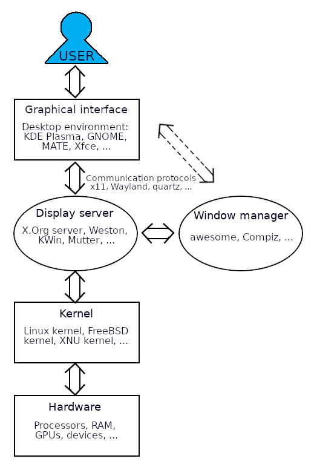
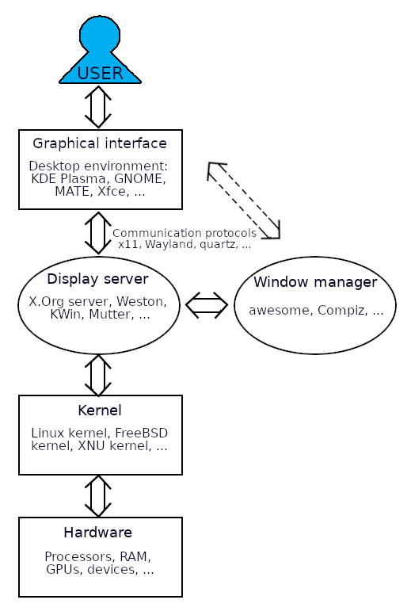

Overview of Linux system¶
This is a brief overview of how the parts of a Linux system go together:

To read more about the terms, go to the Linux terminology section under “EXTRAS”.
This is a brief overview of how the parts of a Linux system go together:

To read more about the terms, go to the Linux terminology section under “EXTRAS”.